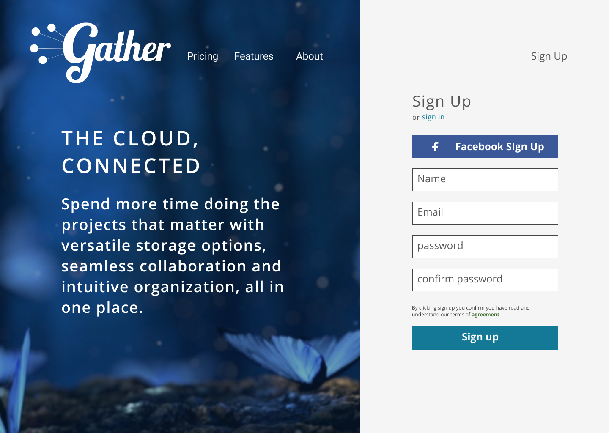

Gather
An intuitive, accessible and inclusive solution to cloud storage
View the Invision Prototype
Research
Branding
Visual Design
User Testing
Identity
Low-Fidelity project__images-row
User Personas
Sitemap and User flows
Logo design
Style Guide
Responsive App Design
Figma
Usability Hub
Illustrator
Invision
Draw.io
Managing your content on cloud storage can be a cluttered and disorganized experience. Cloud storage services are generally lacking in versatility or trying to do too many things at once. Because of this, users find themselves juggling between many cloud storage sites. Gather strives to simplify cloud storage by making it easy to keep your content all in one place.
Gather gives you more time to focus on what matters with intuitive organization, seamless collaboration and versatile uploading, all in one place. With Gather you can upload any type of file and organize it with visual folders and categories. Sharing and content creation keep you connected and give you an all in one solution to cloud storage.
Coming up with Gather had to begin by understanding cloud storage users needs and pain points. In my user survey I wanted to figure out both what users loved about cloud storage and where their specific pain points were. Since cloud storage is a relatively new market, I was also interested in seeing what features users would like to see in the future and which ones they could do without.
use Google Drive for cloud storage
like having all their files in one place
find it hard to stay organized using cloud storage
After completing the survey, I realized that users really needed a cloud storage app that could meet their expectations of organization and versatility. The ability to create content, upload any type of file and have robust sharing features was what users weren’t finding in the current cloud storage market. Juggling multiple apps was too complicated and leaving them disorganized and frustrated.
The needs of cloud storage users were simple, sharing and uploading any type of file with anyone. I needed to create a cloud storage app that made it simple to keep track of your content and share it.


To get an idea of the needs of different users, I developed some user personas. Julie the teacher, needs an easy way to share files with her coworkers and students. Roger needs a collaborative sharing experience for his freelance business. Forgetful Randy is a busy student who doesn't have lots of time to learn a new piece of software and wishes cloud storage wasn't so complicated.
“I need my cloud storage app to be as versatile as my job demands”
Roger is a freelance web developer who spends most of his time sharing work with clients via Dropbox. Roger loves the idea of keeping all his files in one place, but sharing is another big priority for Roger. Roger wishes dropbox would show him who he has shared a file with and who has accessed it for easy client communication and since he relies on this service for his clients, the easiest sign up experience possible is essential for good business.

“I’m so busy I need an app that will save me time looking for work”
Randy is a busy college student who juggles full time school and a part time job, but as a forgetful teen he sometimes forgets the content he creates and needs to find it quickly as he’s always in a hurry. Sometimes he uploads files from his phone but it takes a long time and he doesn’t always know if it uploaded or not.He hopes cloud storage can help him stay organized
“I’m always on the hunt for ideas that will inspire my students in new and engaging ways!”
Julie is a first year teacher who uses Pinterest as a way to get a lot of new ideas but she mainly uses Google Drive with her students and other teachers. Julie is frequently uploading pictures and creating documents on her tablet and school computers and needs an app that is going to be reliable no matter the setting. Julie also needs to collaborate with other teachers and students via sharing and needs lots of easy to manage sharing settings.
Based on the results from the survey and using my user personas as a base, I went ahead and created some user stories to help prioritize features and define the scope of the project.

To keep the user experience as smooth as possible, user flows were made. These user flows focused on smooth sign up, sharing and uploading. These flows became the backbone for my prototypes moving forward.
I created Low-fidelity project__images-row using Invision and tested them with a usability test script for 3 different users. I wanted my tests to feature ease of onboarding, uploading and moving content. While users had an easy experience signing up and uploading, some users showed hesitation while moving content. As I moved towards future iterations, I added some iconography for the move feature.

Before I went on to higher fidelity prototypes, it was time to get a feel for the brand’s vision and style. I knew the brand mission centered around bringing together people and content. After lots of brainstorming, the name Gather formed. The community feel of Gather lended itself to a script font. Lobster was a perfect pairing for the vintage togetherness that is at the core of Gather’s brand. Open sans as a supporting text was friendly, airy and easy to read.

Still not sure of a few aspects of my design, I got the help of the public to help me with some final preference tests. I tested a folder design, features page and nav bar design on Usability Hub, with 32 responses here are the results:


14%
14%
71%

25%
75%

25%
75%
Our high fidelity prototypes went through many design iterations based on user feedback. During our first round of testing users felt the iconography was hard to read, but when we made it bigger the design looked cluttered. For our next iteration we simplified to a single icon which opened a drop down menu. Many design iterations later, users had a smooth experience uploading and organizing their content on the app.
Sign up was easy to execute and many users were excited about the opportunity to sign up via faceboook, something most testers expressed that was their preferred sign up. On the other hand, users expressed that the main image on the sign up page didn’t connect with the brand message. I also received feedback that for sign up forms, putting the sign in prompts on top of the input fields rather than inside was an even easier user experience. After making those changes users were delighted with a seamless and easy sign up process that left the excited to try the new app.
Before
After

Users thought the design was inviting but wanted more room for content, so Instead of the large buttons at the top I added a smaller button on the side of the page for users to add and upload new content from there, furthermore I shrunk the nav heading and logo while also expanding the search bar. User feedback thought the icons made moving and sharing files easy, but design wise they said it felt tight so I condensed the icons into a small drop down menu so it was still easy to navigate but maintained a clean and easy to use interface
Before

After

Working through Gather helped me gain confidence in the iterative process of design. Creating an app that centered around user content was challenging. After completing many rounds of user feedback and design iterations, I was able to make a cloud storage app with a smooth user experience.